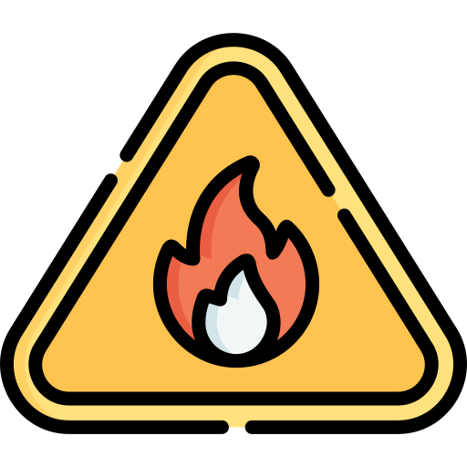

OÑANGAREKO VA
☰ Opciones
Capas
Areas Protegidas
Municipios [IGM (ajustado por FAN-RAISG)].
Caminos [GeoBolivia 2016]
Vegetacion [NyF 2007]
FIRMS, Focos (VIIRS)
Mostrar focos
Días (1 a 10):
Sensores VIIRS
SNPP
NOAA20
NOAA21
Actualizar
Listo.
Auto-actualiza cada 15 min. Respeta el rate-limit de FIRMS.